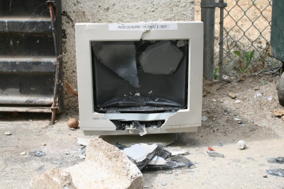
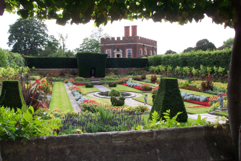
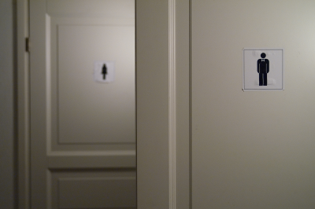
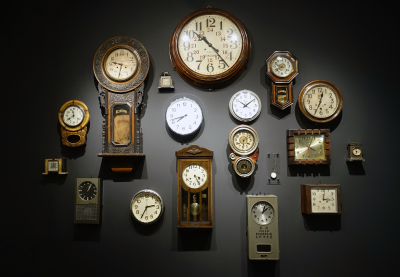

Dnes začala dlouho očekávaná přestavba budovy E. Stávající stavba z roku 1987 bude kompletně zbourána. Stavební odpad bude v co nejvetší možné míře použit na stavbě nové.
Během příprav této akce se samozřejmě zvažovalo i o rekonstrukci budovy, ale vzhledem k tomu, že do budovy masivně zatékalo a poslední návštěvou statika na místě bylo potvrzeno narušení statiky objektu, nebylo jiné cesty než demolice stávající budovy a stavby nové.
Návštěvníci se mohou tešit na novou tří patrovou budovu. Nová budova bude maximálně energeticky efektivní, plně bzebariérová(včetně nové stavby výtahů), bude mít lepší rozvržení i nejnovější vybavení.
Během stavby, jejíž konec se očekává koncem příštího roku, bude částečně omezen provoz venkovní zahrady centra. Předem se omlouváme za nepříjemnosti a omezení způsobená stavbou.
Projekt je spolufinancován z fondů Evropské unie a Ministerstva kultury České republiky.
Datum přidání
Výpadek IT systémů

Centrum Omega dnes eviduje neočekávaný výpadek IT systémů centra. Z tohoto důvodu dnes mimořádně budou omezeny některé služby.
Veškeré akce jsou do odvolání zrušeny. Prodej vstupenek na akce, a to včetně kurzů, dnes nebude umožněn.
Rušení akcí se netýká pravidelných kurzů. Účastníci kurzu budou muset předložit doklad o zaplacení vstupného pouze v papírové podobě, a to včetně doložení faktury.
Půjčovna sportovního vybavení je do vyřešení problému též uzavřena. Případné výpůjční doby se bez doplatku prodlužují o 24 hodin.
Vážení návštěvníci centra Omega, velice se omlouváme za způsobené nepříjemnosti.
AKTUALIZACE : Vážení návštěvníci, problémy se podařilo vyřešit. Veškerá výše popsaná opatření se tímto okamžikem ruší.
Datum přidání
Aktualizace
Nový sponzor centra Omega
Centrum Omega veřejně děkuje společnosti Grendity Financial Solutions,že se přidala k dalším společnostem, jenž se rozhodli finančně podporovat centrum Omega.
S odborníky ze společnosti Grendity centrum Omega také plánuje do budoucna mimo finanční podpory též organizaci speciálních kurzů a přednášek zaměřených na ekonomická témata.
Datum přidání
Zahrada opět otevřena

Vážení návštěvníci, po nucené přestávce a udržovacích a uklízecích pracech vám s radostí oznamujeme, že zahrada centra Omega je opět otevřena.
Můžete se tešit na obnovenou druhovou skladbu rostlin, nové ploch k posezení a nově přebudované cesty. Dále jsme po rekonstrukci otevřeli kavárnu s posezením a s nabídkou domácích zákusků a různého obloženého pečiva.
V budoucnu ještě počítáme s rekonstrukcí dětského hřiště a s venkovní plochou pro pořádání venkovních přednášek a promítání filmů. Začátek těchto rekonstrukčních prací je očekáván v řádu týdnů.
Vážení návštevníci, přijďte strávit příjemný den v naší zahradě. Zahrada je otevřena po celou dobu otevírací doby centra.
Datum přidání
Uzavření toalet v budově A

Vážení návštevníci centra Omega, vzhledem k poruše vodovoního řadu budou dnes uzavřeny toalety v budově A. Tato odstávka nenaruší fungování ostatních budov v areálu centra, tudíž lze využít toalety v jiních budovách.
Znovuzprovoznění toalet v budově A se očekává až v pozdních večerních hodinách, tedy až po konci otevírací doby centra.
Vážení návštěvníci, velice se omluváme za případné nepřijemnosti způsobené uzavřením toalet. Předem děkujeme za pochopení nastalé situace.
Datum přidání
Zrušení dněšního kurzu
Vážení účastníci kurzu základy korejštiny, z důvodu nemoci je dnešní kurz zrušen. O náhradním termínu se dozvíte pomocí e-mailové zprávy.
Vážení účastníci, omlouváme se za případné komplikace.
Datum přidání
Prodloužení otevírací doby

Vážení návštěvníci, vzhledem k postupnému narůstajícímu počtu návštěvníku se management centra Omega rozhodl k prodloužeení otevírací doby centra.
S aktuální platností se tedy prodlužuje otevírací doba centra, a to konkrétně její ranní část. Centrum bude dopoledne otevřeno již od 08:00, místo dosavadních 11:00.
Zároveň s touto změnou centrum vyjednává o akcích, které by mohli probíhat v dopoledních hodinách. Konec otevírací doby zůstává nezměněn.
Vážení návštěvníci, centrum Omega Vám srdečně děkuje za narůstající zájem o aktivity centra Omega.